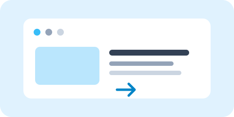

Додати нове посилання
Додасть нове зовнішнє посилання з rel="nofollow". Після появи розширення має підсвітити його як External — nofollow.
Тут з’явиться щойно додане посилання.
LINKS HIGHLIGHTER · ПОСІБНИК І ДЕМО
Відкрийте цю сторінку в Chrome, щоб перевірити Links Highlighter у реальному контексті сайту. Тут є приклади класифікації та покрокова довідка. Демопосилання безпечні: звичайне натискання не відкриває їхні адреси.
Цей спосіб встановлює розширення з вихідного коду репозиторію як unpacked extension.
manifest.json.
chrome://extensions, увімкніть Developer mode, натисніть Load unpacked і виберіть розпаковану кореневу папку проєкту.
chrome://extensions відкрийте Details для Links Highlighter і ввімкніть Allow in incognito. Без цього дозволу Chrome не запускає розширення в анонімних вікнах.
Для оновлення замініть файли в тій самій папці встановлення на вміст нового архіву, потім натисніть кнопку перезавантаження на картці розширення в chrome://extensions. Не переміщуйте папку, з якої Chrome завантажує розширення.
href, rel і inline onclick. Для real-time без автопідсвічування натисніть Highlight; з обома опціями сканування й моніторинг запускаються одразу після перезавантаження сторінки.example.com не виключає shop.example.com — піддомени додаються окремо. На виключеному сайті сканування й скидання вимкнені.gastello.github.io.media.gastello.github.io є піддоменом gastello.github.io.example.com, example.org та example.net.nofollow в атрибуті rel визначає follow-статус: якщо він є, посилання має статус nofollow; якщо немає — dofollow. Інші значення rel, зокрема ugc і sponsored, розширення не враховує для цього статусу.#), некоректний URL чи схема, яку розширення не класифікує як звичайне вебпосилання. Це технічна категорія, а не твердження, що сайт шкідливий; її фільтр працює окремо від Internal/External.Приклади Internal і Subdomain залежать від адреси, з якої відкрито цю демосторінку. Якщо розмістити копію на іншому домені, частина результатів класифікації зміниться.
Посилання нижче — тестові зразки. Звичайне натискання не відкриває їхні адреси, тож можна безпечно перевіряти кольори й інформацію у Full info.

Посилання на інший сайт — ExternalРозширення аналізує посилання у доступних HTTP/HTTPS-фреймах відносно адреси самого фрейму. Для позначок у локальному прикладі ввімкніть Iframe links; для Unknown додатково потрібні фільтри Unknown destination і JavaScript links.
Вміст завантажується із сайту CERN і залежить від мережі та політики вбудовування. Якщо він не з’явився, перевірте локальний iframe поруч — його приклади не залежать від стороннього сайту.
Увімкніть JavaScript links, щоб додати ці приклади до результатів. Бейдж JS показує виявлений код навігації; він не замінює основний тип і follow-статус. Для визначеної адреси колір показує тип посилання, для невизначеної — колір Unknown. Якщо посилання також у фреймі, з’явиться бейдж IFRAME + JS.
Приклади переходять лише на фрагменти цієї сторінки або не виконують навігацію. Звичайний клік по демопосиланнях вимкнений.
JavaScript href з буквальним призначеннямЦі кнопки додають посилання або змінюють href, rel та inline onclick. Увімкніть Monitor new or changed links. Якщо Highlight links when a page loads вимкнено, натисніть Highlight, щоб запустити спостереження. З обома ввімкненими режимами спостереження почнеться автоматично після перезавантаження. Щоб побачити бейдж JS після додавання onclick, увімкніть також фільтр JavaScript links. Посилання після зміни адреси стає Internal на gastello.github.io; результат буде іншим, якщо відкрити копію сторінки локально або розмістити її на іншому домені. Розширення відстежує появу посилань і зміни цих атрибутів, але не може виявити всі обробники, додані скриптами сторінки.
Додасть нове зовнішнє посилання з rel="nofollow". Після появи розширення має підсвітити його як External — nofollow.
Тут з’явиться щойно додане посилання.
Кожна дія змінює один атрибут. Очікувано: адреса перемикає External/Internal, rel — nofollow/dofollow, а onclick додає бейдж JS.
Початковий стан: зовнішня адреса, rel="nofollow", JavaScript-навігації немає.